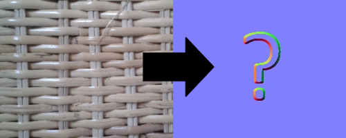

Height map
 This texture contains the distance "height" from "floor".
The brighter the pixel, the further away (more depth).
This texture contains the distance "height" from "floor".
The brighter the pixel, the further away (more depth).
In this application it doesn't matter if it's inverted,
the most important thing is the difference between the pixels.
Ideal is a texture with pixel dimensions with a power of 2 (2, 4, 8,..., 256, 512 etc.)
Using a height map for example as displacement,
you can easily see the effect on the surface.
An example heightmap (left), bumps going in (top-right)
and bumps going out (bottom-right).

NormalMaps from photos
It is technically not possible to get completely correct normalmaps directly from pictures e.g. taken with a camera.

But because many of you are interested in this, I considered searching for good methods to still achieve reasonable results from photos.
There seem to be some techniques that can create decent normalmaps.
Still it would take me a lot of time to learn about these techniques.
Right now I'm studying a master's degree, working part-time and giving lessons in programming.
If you would like me to invest more time on finding and implementing a solution for this, please consider donating!
I could work more on this project and include more features you want!

 Normal Maps are textures that inherit depth information of a surface.
Normal Maps are textures that inherit depth information of a surface.